| 日付 | 2018年4月8日（日） |
|---|---|
| 山域 | 西上州 |
| メンバー | 家族（妻、長女・7歳、長男・4歳） |
| 山行形態 | 子連れ日帰り |
| アクセス | 車 |
| ルート (Map) | 栗木平駐車場 (9:01) - (10:32) 御荷鉾スーパー林道 - (11:09) 赤久縄山 (12:20) - (13:56) 安取峠 - (14:24) 栗木平駐車場 |
先週に引き続き今週も山に行くことにする。
行先は西上州の赤久縄山。前々から一度は行ってみたかった山だ。
特に目立った特徴は無さそうな山だが、トレーニング山行には程よい山だ。
栗木平の駐車場に車を停める。標高800m。
数台は車を停めることができる。
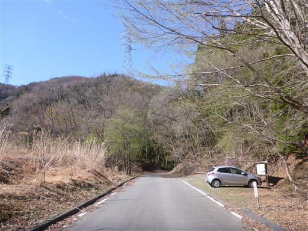
車窓から眺める神流川沿いの新緑の景色はきれいだった。
標高の高いこの場所は、まだ芽吹き直後といった感じだ。
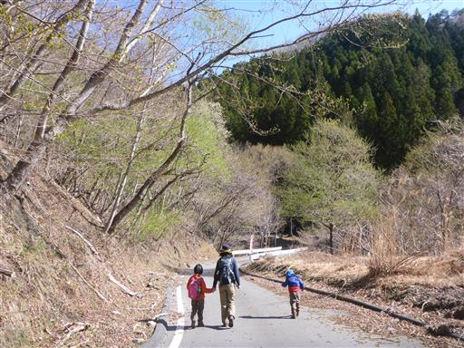
沢沿いの登山道を登って行く。
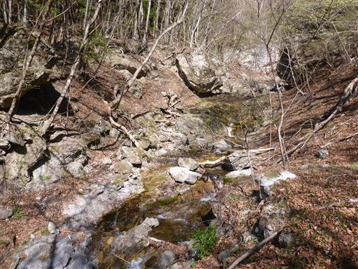
早滝を示す標識があり、赤久縄山は（ ）扱い…
早滝は氷瀑が美しい滝だが、この季節では見られないので今回はパスする。
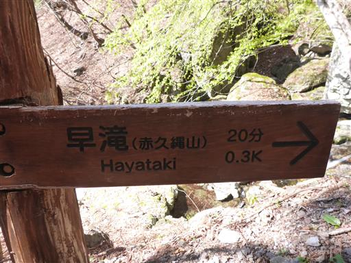
つる植物の木が頭上にぶら下がっている。
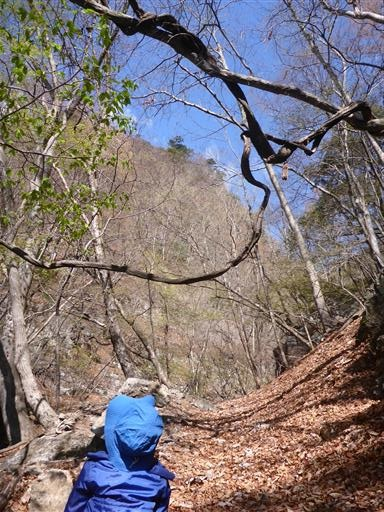
対岸の斜面に美しいピンクの花が見える。恐らくアカヤシオだろう。
まさに春の景色だ。
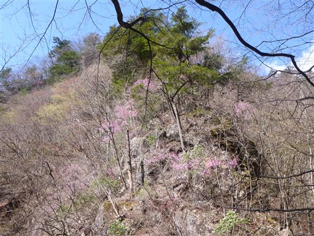
足元にはハシリドコロの花が咲いている。
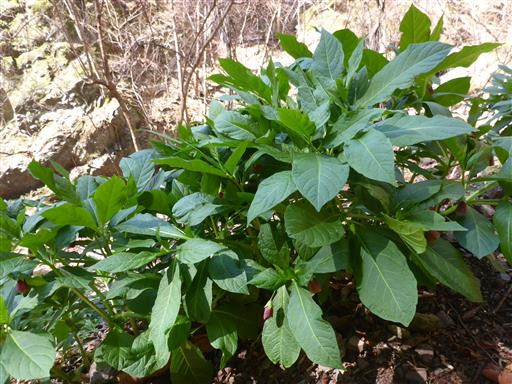
だんだんと斜面が急になってくる。今日も序盤のペースは快調だ。
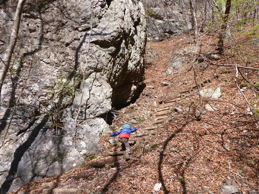
ヨゴレネコノメ。
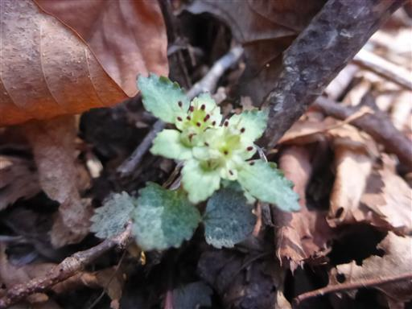
コガネネコノメソウ。いずれも沢沿いでよく見かける花だ。
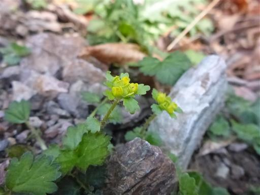
しばらく登ると杉の植林地帯になる。花粉がちょっと心配だ。
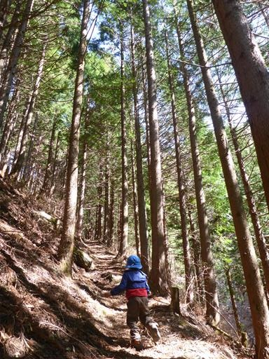
急斜面や滑りやすいところには補助ロープが張ってある。
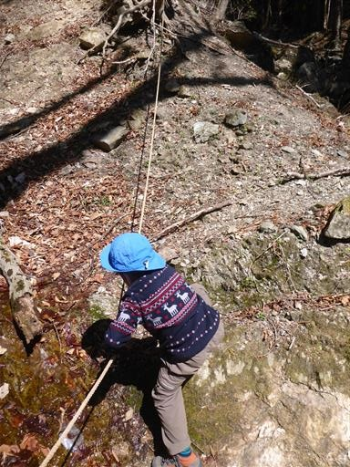
沢を何度か渡渉する。水量はほとんどないので楽勝だ。

本日一番迷った分岐点。右に曲がる道には「神流マウンテンラン＆ウォーク」と書かれている。
その上にある標識の文字は消えていて読めない。
どちらの踏み跡もはっきりしてそうだったが、ここは右折することにする。
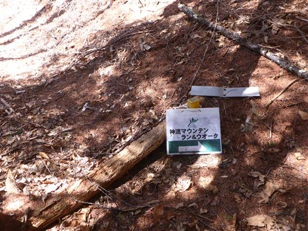
登山道は尾根に出る。道は合っているようだ。
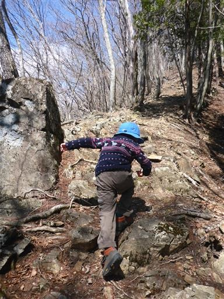
赤久縄山らしき山頂が見えてくる。山の上には暗い雲が覆っている。
ここにある標識も消えていて読めない。
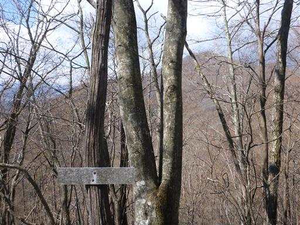
ようやく辛うじて読める標識が出てくる。
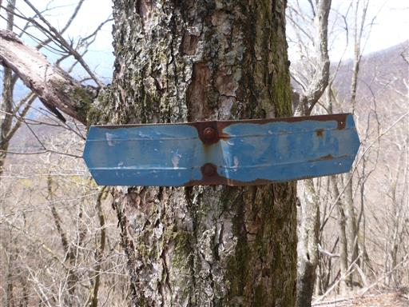
子連れだと怖い急斜面のトラバース道。
道は細く若干傾いていて歩きにくい。
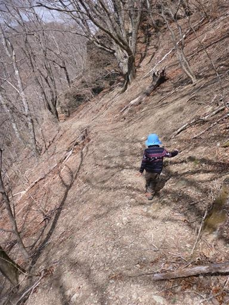
稜線に到達する。足元に御荷鉾スーパー林道が見える。
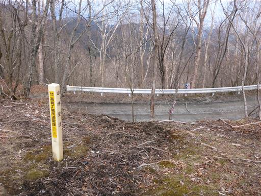
登山道は続いていたがトラバース道が続きそうだったので、
ここからしばらくは御荷鉾スーパー林道を歩くことにする。
今ではほとんど使われてなさそうな林道だ。
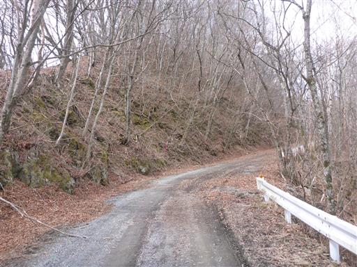
本日最初の展望が広がる。ギザギザの稜線は両神山とそこから伸びる尾根。
背後の山は奥秩父の主稜線だ。
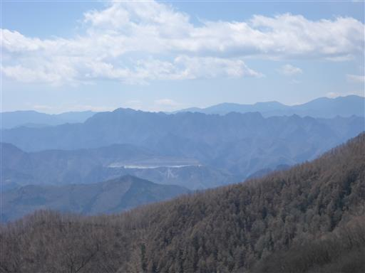
赤久縄山への登山口があったので、ここから再び登山道に入っていく。
あともう一登りだ。
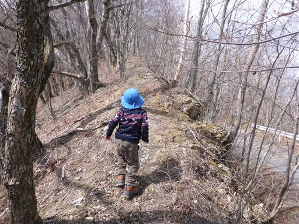
周囲の木には、木の名前を書いた札があちらこちらに掛けられている。
しかしひっくり返ってしまっているものが多い。
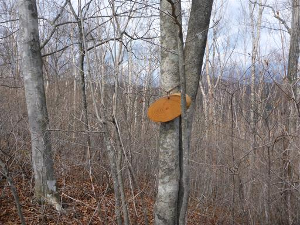
大きな木が二本並んで立っている。

足元に大きな芽が無数に出ている。恐らくバイケイソウだ。
もう少し経つと足の踏み場が無くなるくらい繁茂しそうだ。
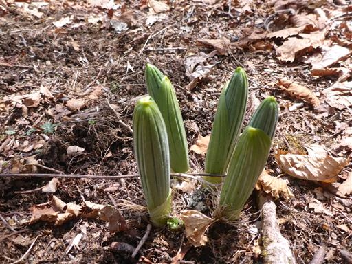
折れた木が立っている。先っぽはかなり鋭い。
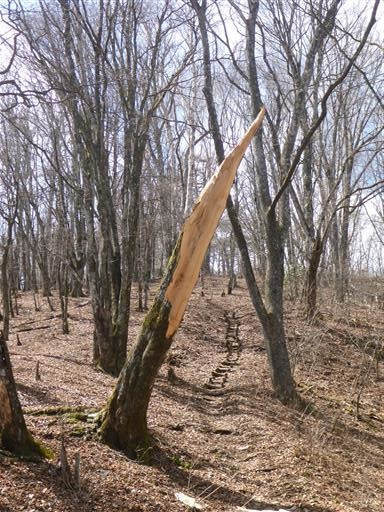
側には折れた木の先端部分が転がっている。
折れた部分は白くてきれいで、折れてからあまり日が経っていないように見える。
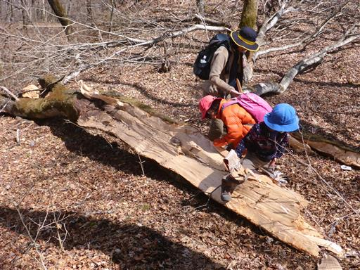
ダケカンバの樹皮を拾う。かなり大きくて紙みたいだ。
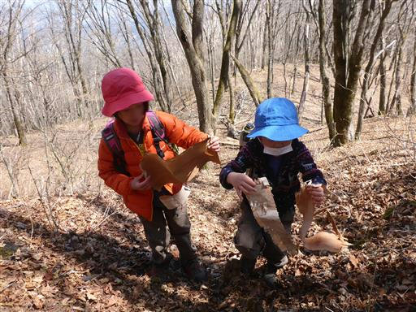
赤久縄山の山頂に到着する。標高1522m。
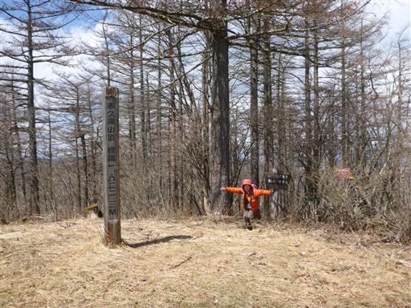
展望はあまりない山頂だが、明るく開けている。
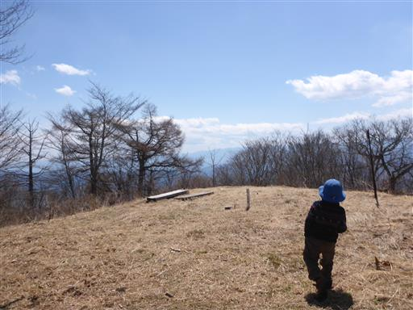
一角のみ展望が開ける。目の前に見えるのは御荷鉾山。
整った形の双耳峰だ。
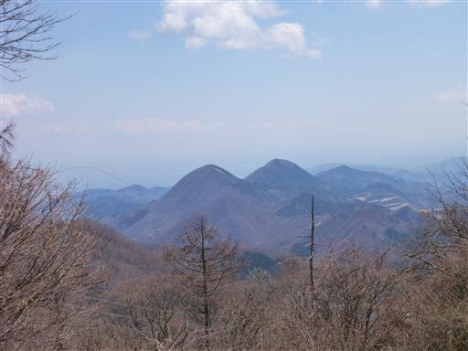
山頂には一等三角点が埋まっている。
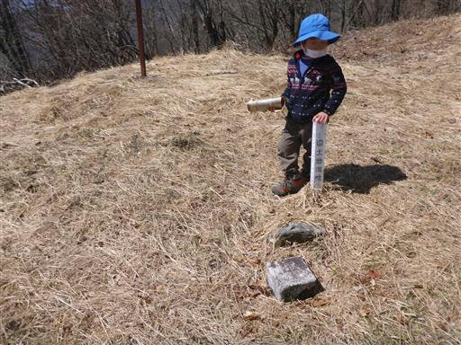
カップラーメンを作っている間、子供たちは山頂の枯れ草を集めて遊んでいる。
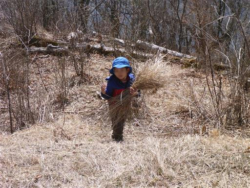
昼食タイム。先週は暑かったが今週は寒いのでカップラーメンがおいしい。
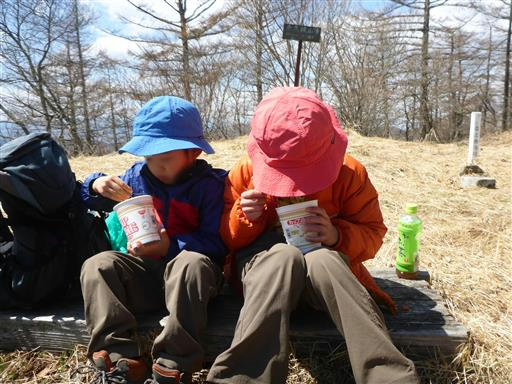
昼食後は登山道で拾ったダケカンバの樹皮を薄く剥がして遊ぶ。
どこまでも薄くなっていく。
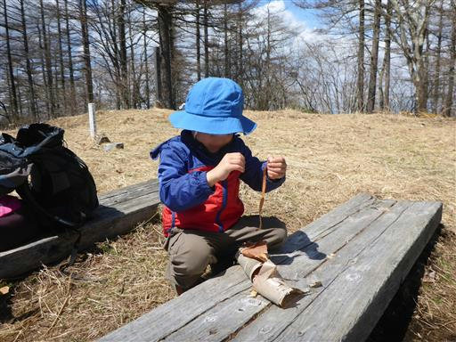
下山は反対方向の西側に続く道を下る。ぐるっと周回コースを歩く予定だ。
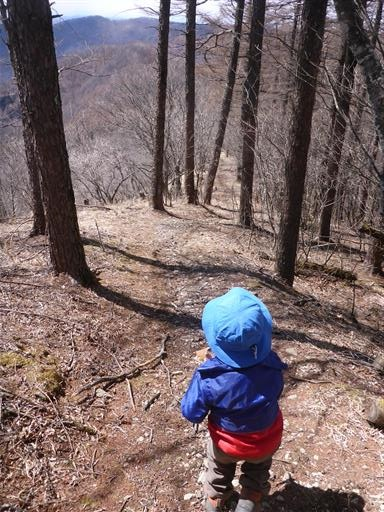
再び御荷鉾スーパー林道まで下りてくる。
大きな駐車スペースがあるが、停まっている車はない。
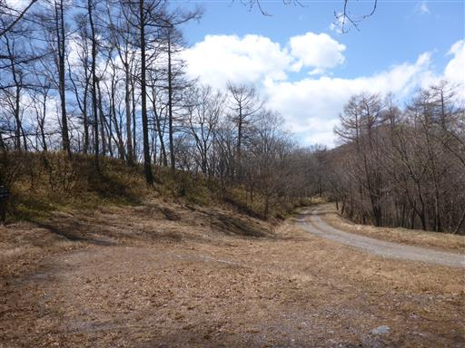
側に祠がある。昔からこの道は存在したのだろうか？
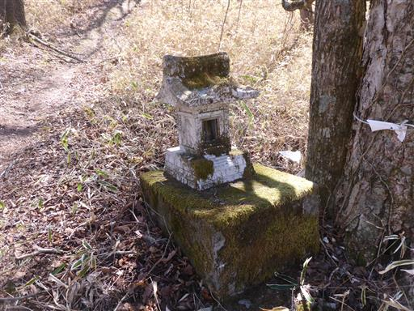
ここからは古い林道跡を下っていく。石が散乱していて登山道よりも歩きにくい。
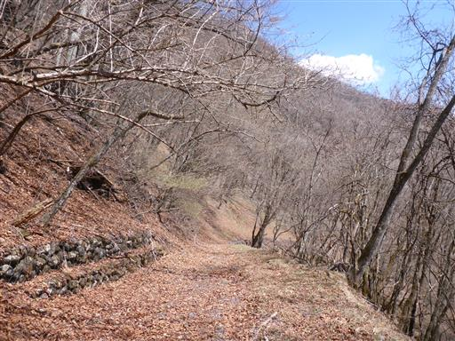
周囲はなぜか木以外の植物が全く無く、遠くまで見渡せる。
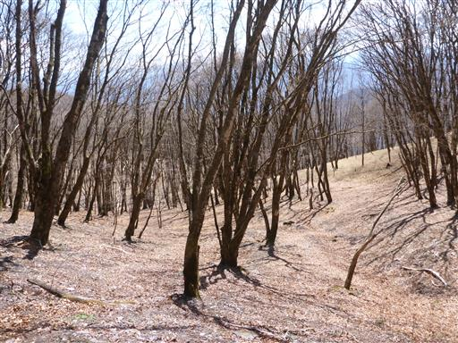
所々で林道が崩壊している。この道は今後崩れ行くのみだ。
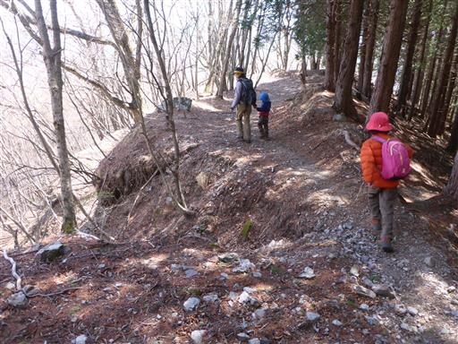
持倉方面への林道と分かれて安取峠方面に向かうと急に道が悪くなる。
ロープに頼りながらのトラバース道だ。
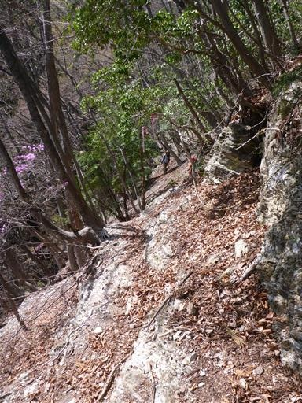
トラバース道は続く。とっても滑りやすそうな斜面。
息子と手を繋ぎながら歩くのも難しい。
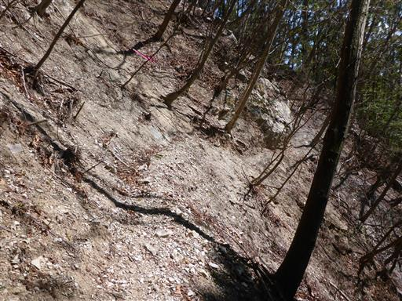
目の前に白石山が聳えている。
登山道はあるようだが、かなりのマイナーピークだ。
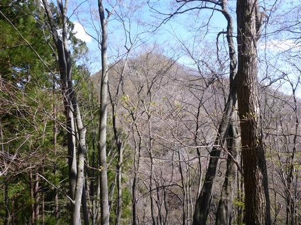
地面にハチの巣が落ちている。もう主はいないようだ。
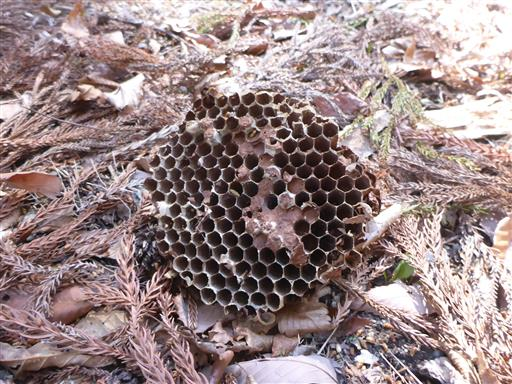
ツツジの花と新緑が美しい。
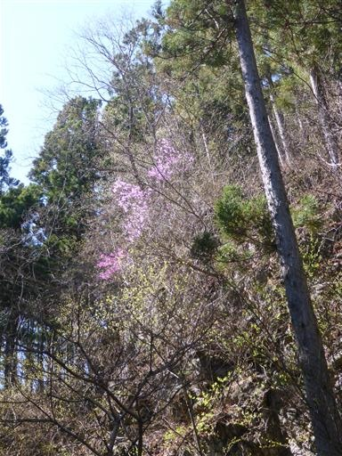
目の前に大きな林道が見える。
林道は遠回りなので、その手前の分岐点で左折する。
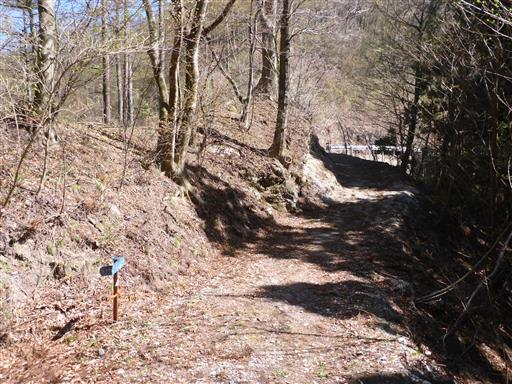
キケマン属の何かだと思うが、さて何という花だろう？
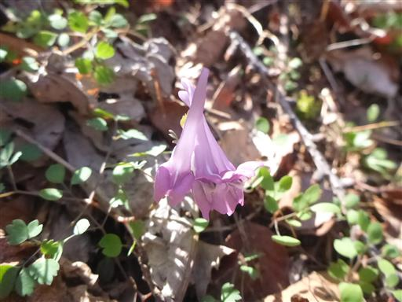
沢を何度も渡りながら下っていく。
登山道はほとんど見えないので、親が先導しながら歩く。
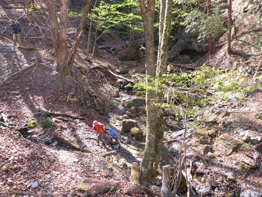
僅かながらカタクリの花が咲いている。
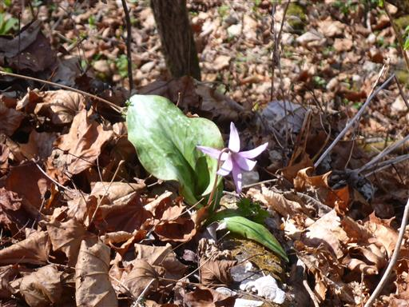
ロープを使って沢に下りる。
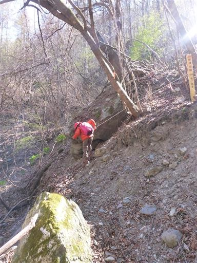
沢に下りたら再び渡渉。全般的に歩きにくい登山道だ。
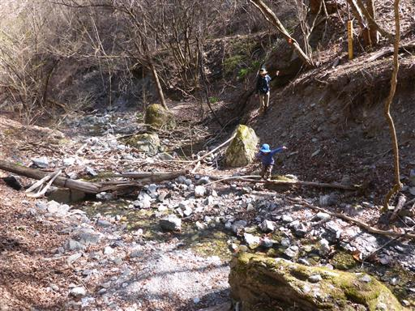
赤久縄山の登山口に到着する。
5分ほど車道を歩くと駐車場に到着する。
山頂はまだ冬の景色だが、この辺りは春の景色だ。
下山後は山頂で食べ忘れた大福を食べて、その後は蟻と遊ぶ。
程よい距離・標高差の登山道で良いトレーニング山行になった。
赤久縄山は週末の山行にもかかわらず誰とも出会わない静かな山だった。